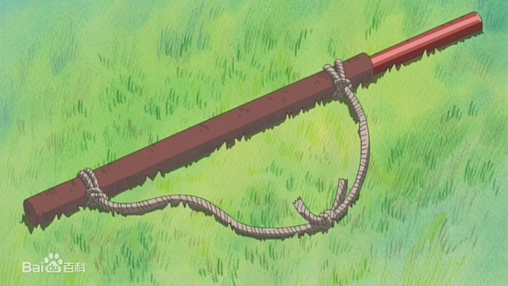
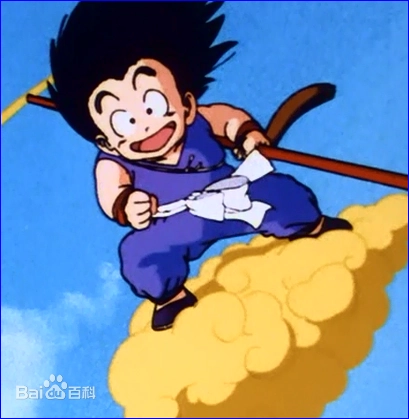
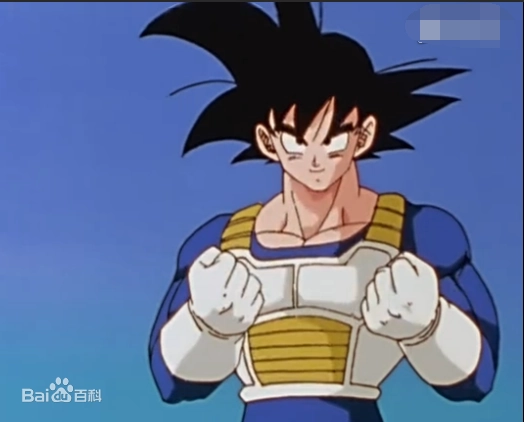
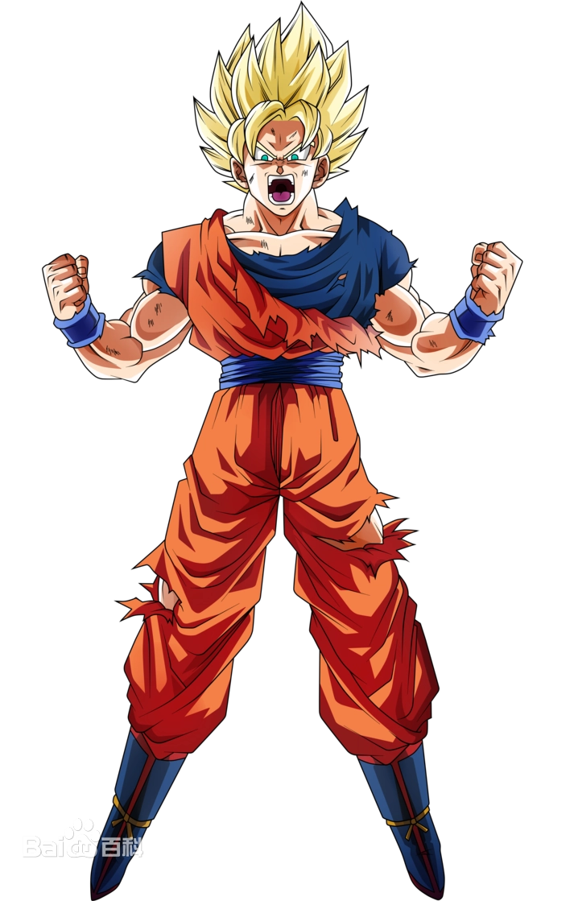
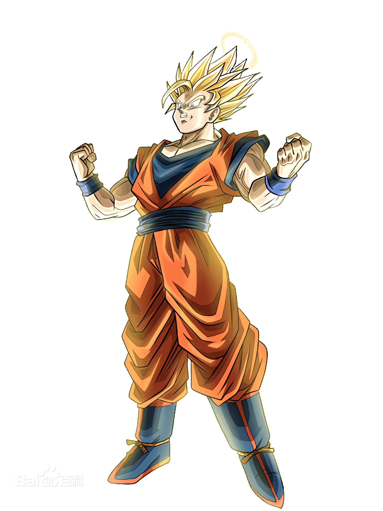
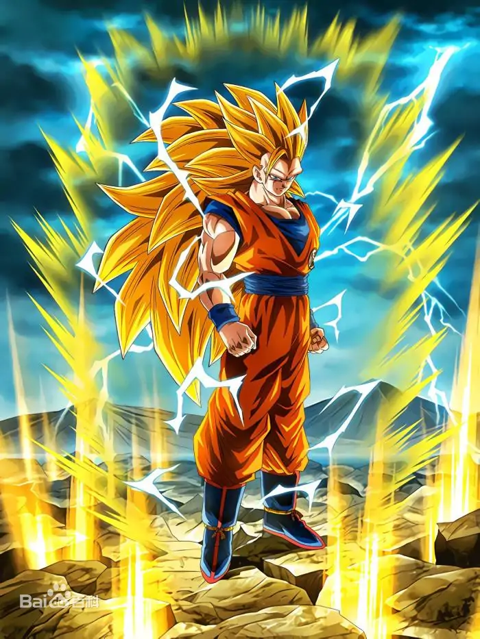
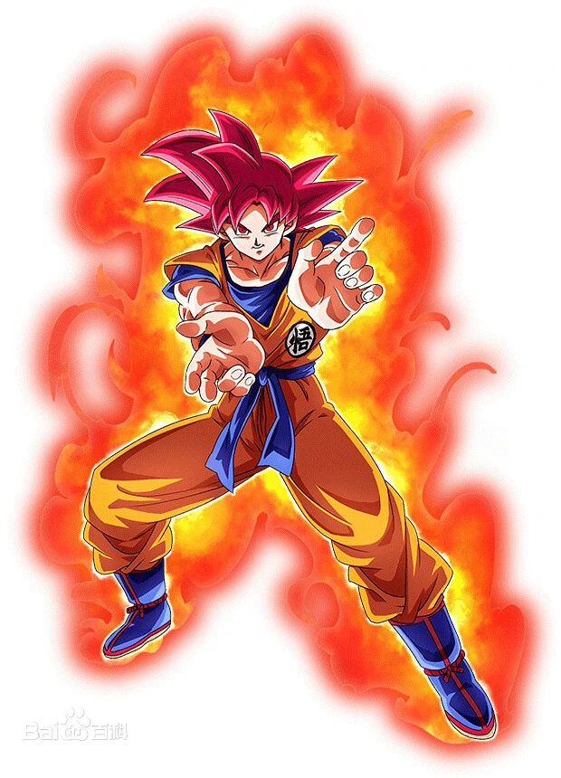
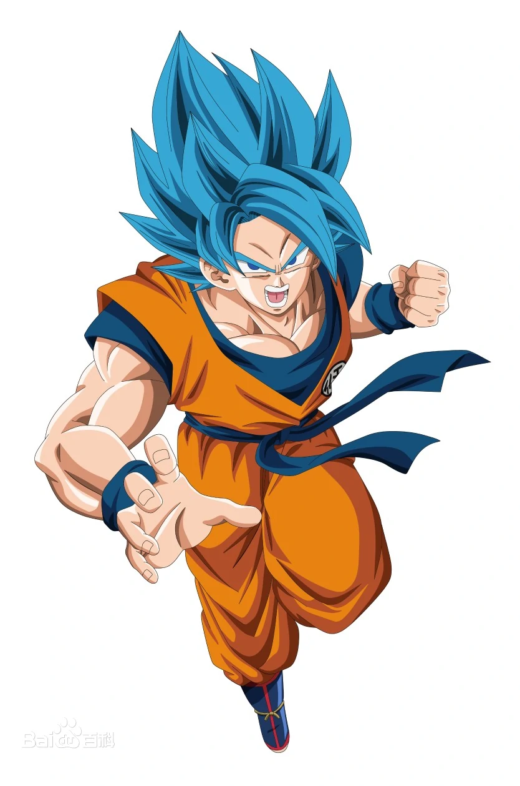

目录索引
孙悟空，日本漫画《龙珠》及其衍生作品中的男主角。原名：卡卡罗特。来自贝吉塔行星的赛亚人，幼时以“下级战士”之身份被送往地球，并被武道家孙悟饭收养，因失控变为巨猿将孙悟饭踩死后独自生活在深山，后因结识布尔玛从而踏上寻找龙珠之旅。梦想是不断变强，为追求力量而刻苦修行。
是连接卡林塔与天神殿的神器。轻便但十分坚硬，且能按使用者的意愿伸长缩短。
本体是卡林塔外的一大片云。不怕子弹、炮弹等一切物理攻击，但会被魔族的攻击打散。
外星人的专用服装，（除一些偏僻科技落后的星球外）防御力非常高、柔韧性好、非常轻巧。
在那美克星一战中悟空目睹了克林的死，愤怒而变成的状态。战斗力是常态的50倍。
悟空在阴间期间所修炼出的形态。战斗力是常态的100倍，由超级赛亚人的基础上再一次的变身。
悟空在阴间期间所修炼出的形态。战斗力是常态的400倍，由超二的基础上再一次而改变。
面容显得比较年轻，头发和眉毛变成荧光红，双目变成包裹黑色仁心的红瞳，周身环绕着火焰般的灵气。
悟空在维斯的训练下所修炼达到的形态，头发和眉毛与瞳孔变成荧光蓝，气息变为天蓝色。
通过感受某人的气，不用经过任何路径，瞬间到达某人的地方，也可带人，但不能去没人的地方。
原理和龟派气功类似，可连续发射，但威力没龟派气功那么大。用途多样。
使用时双手合成花萼状，把花萼状的手放在腰间，在双手掌心聚成一个能量光球，聚集到一定程度时双手推向敌人。威力随着使用者增强而增强（例如超级、10倍）。
聚集生命的能量，但最后将元气弹吸收，大幅度强化自己的气。
| 关系 | 名称 | 备注 |
|---|---|---|
| 爷爷 | 孙悟饭 | 收养悟空的武林高手，龟仙人大徒弟，最后被巨猿化的悟空踩死。 |
| 妻子 | 琪琪 | 牛魔王之女，勤俭持家养大两个儿子。 |
| 长子 | 孙悟饭 | 爱好和平，自幼与父亲并肩作战，长大后成为学者。 |
| 次子 | 孙悟天 | 悟空在沙鲁游戏前留下的次子，性格单纯。 |
| 师傅 | 龟仙人 | 又称“武天老师”，龟仙流创始人，对悟空的成长十分重要 |
| 朋友 | 布尔玛 | 女主角，天才发明家、世界首富。 |
| 兄弟 | 库林 | 身材矮小，与悟空同时拜师龟仙人，是悟空最好的伙伴。 |